Co-op Mission Guide: Lock & Load
Ulnar
Sections on this Page
Mission Summary
Amon seeks to destroy Ulnar before it can be used to open a gate to the Void. You and your ally must take control of the celestial locks before their energies overload.

Objectives
Primary Objective
- Activate Celestial Locks (5)
- Prevent Lock Overload
Secondary Objective
- Destroy the Xel'Naga Construct (1)
Enemy Base Analysis
Change all base analysis pictures to race:
The goal of the mission is to capture all the Celestial Locks before they overload. You capture a Lock by moving a unit and an ally's unit near the Lock. It takes 30 seconds to capture a lock.
When the enemy captures a Lock, an overload ticker will start. When the overload ticker reaches 9000, you will fail the mission. Note that in-game, this is shown as a percentage. The speed of the overload changes depending on how many Locks the enemy has captured. The table below summarizes this information.
| Captured Locks | Ticks per Second | Time to Mission Fail |
|---|---|---|
| 0 | 0 | - |
| 1 | 6 | 25:00 |
| 2 | 7 | 21:25 |
| 3 | 8 | 18:45 |
| 4 | 9 | 16:40 |
| 5 | 10 | 15:00 |
The first Lock that is captured is usually the middle lock. This is very lightly defended, and usually a hero unit can clear.
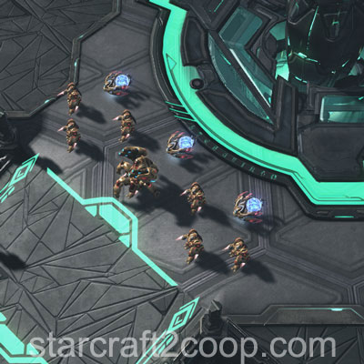
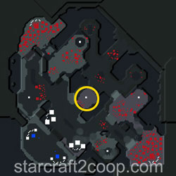
The next Lock that is captured is usually either the West or the Southern Lock. The Western Lock is shown below. Note the presence of cloaked/burrowed units.
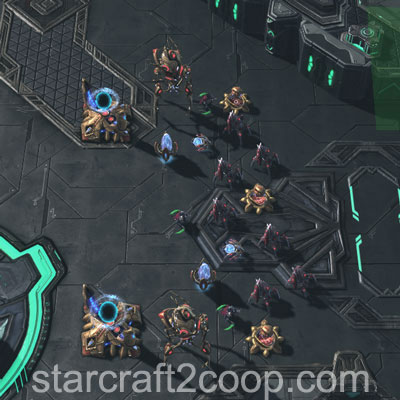
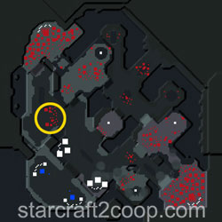
The Southern Lock is shown below. Note the presence of Capital Ships.
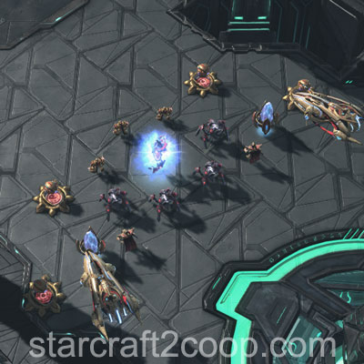
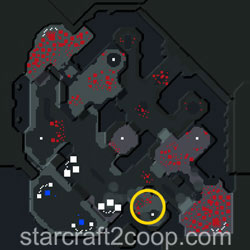
The Eastern Lock is one of the more difficult Locks to capture, due to the presence of Hybrids and high-HP units. You will need to push up one of the two ramps to get to the Lock.
If you choose to push from the Southern ramp, there is a small enemy camp in this location as follows. Note the presence of cloaked units.
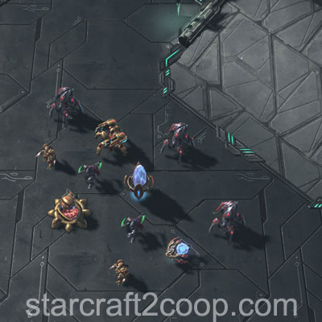
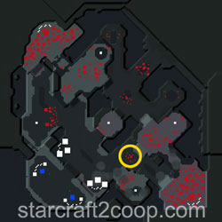
If you choose to push from the Northern ramp, there is also a camp, but guarded by two Hybrid Destroyers.
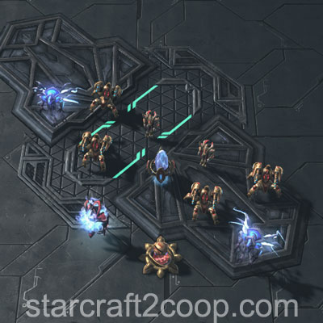
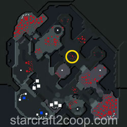
The Eastern Lock is well-defended by Capital Ships and a Hybrid Dominator.
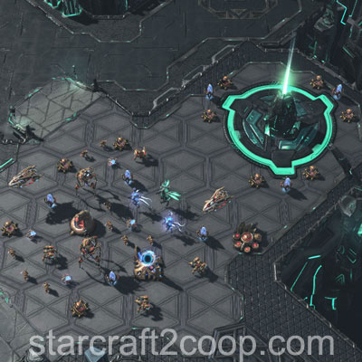
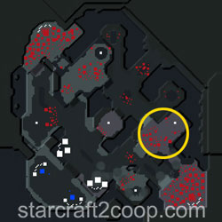
The last Lock that has to be captured is the Northern Lock. Like the Eastern Lock, there are two ramps that can be used to access it. The Southern ramp is guarded by a small force of units.
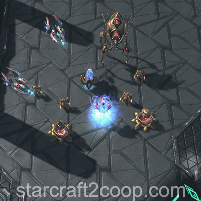
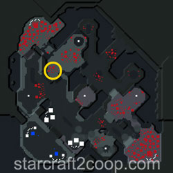
If you choose to go up the Eastern ramp, you can bypass the above force entirely.
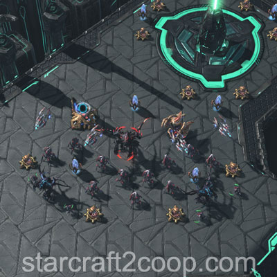
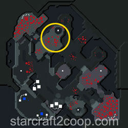
Completing the Bonus Objective
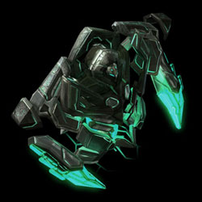
The bonus objective requires you to kill the Xel'Naga Construct. The Construct is guarded by a small force of enemy units as shown below.
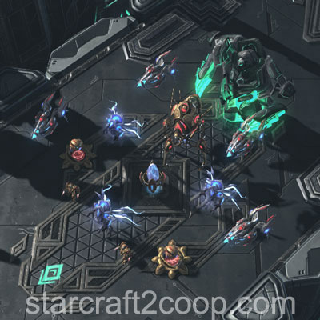
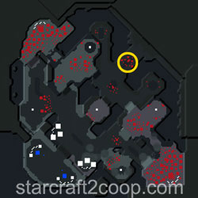
The Xel'Naga Construct can be quite difficult to kill in the early game. Usually, it is much easier to kill it on the way to Northern Lock if that is the last Lock to be captured.
Timings
Note: Information on Tech and Strength levels can be found on the Enemy Compositions page.
Enemy attack waves will target certain Locks first. The first player-captured Lock on their list will be their target. If all the Locks on their list are overloaded (ie. enemy-controlled), they will target your base.
The attack wave timings, Strength and Tech Levels, and their Lock targets are shown below. Here, "O" stands for the middle lock.
| Wave | Time | Tech Level | Strength Level | Lock Target Check List | Notes |
|---|---|---|---|---|---|
| 1 | 4:00 | 1 | 3 | O | Single Wave from the Left |
| 2 | 8:00 | 2 | 4 | S ⇨ O | Single Wave from the Right |
| 3 | 11:00 | 3 | 5 | N ⇨ W ⇨ O E ⇨ S ⇨ O |
Double Wave |
| 4 | 14:00 | 3 | 5 | W ⇨ O S ⇨ O |
Double Wave |
| 5 | 17:00 | 4 | 6 | N ⇨ W ⇨ O E ⇨ S |
Double Wave |
After the 5th attack wave, the subsequent attack waves will follow a fixed pattern, starting from the 19-minute mark as shown below.
| Time | Tech Level | Strength Level | Lock Target Check List | Notes |
|---|---|---|---|---|
| 19:00 | 5 | 6 | S W |
Double Wave |
| 21:00 | 6 | 6 | N ⇨ W W ⇨ O |
Double Wave |
| 23:00 | 4 | 6 | W ⇨ O ⇨ S E ⇨ N |
Double Wave |
| 25:00 | 4 | 6 | N ⇨ W E ⇨ S |
Double Wave |
The pattern above will repeat every 2 minutes indefinitely.
Spawn Points
Attack waves have two gather points each on the left and on the right side of the map. The gather point selected will be the closest to the target. In most cases, the Northern gather point will be selected. The Southern gather point is only selected if the attack wave ends up targeting a player's base.
The gather points on the left side of the map are shown below:
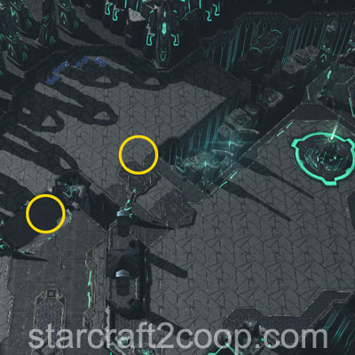
The gather points on the right side of the map are shown below:
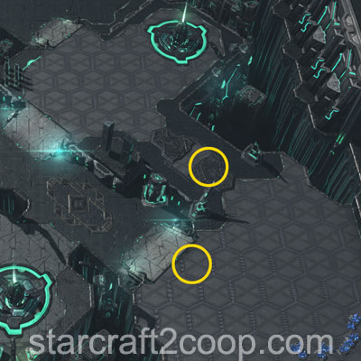
Mission Tips
- Place static defenses on each captured Lock to grant you vision so you can defend against attack waves.
Commander-specific Tips
- Abathur: Place Toxic Nests on the ramps and entrances to captured Locks to defend and get Biomass.
- Dehaka: Place a burrowed drone on each captured lock to give you vision for Dehaka's Deep Tunnel ability.
- Han & Horner: Defend ramps and Lock entrances with Mag-Mines.
- Karax: Use your Spear of Adun abilities to capture your expansion at the start of the game.
- Kerrigan: Place an Omega Worm on each captured Lock to give you the mobility to defend against attack waves.
- Nova: If you use Siege Tanks, defend ramps and Lock entrances with Spider Mines.
- Raynor: If you use Vultures, defend ramps and Lock entrances with Spider Mines.
- Stukov: Once you have creep spread, move your Infested Colonist Compound to your expansion to minimize travel time of your infested.
- Vorazun: Do not use Time Stop on this mission. Using this calldown will cause the enemy AI to wake up and aggressively push locks by units being created from the two side bases, significantly increasing the mission difficulty.
- Zagara: Build your macro hatcheries at the central Lock for quick reinforcements.
- Zeratul: Place a Void Array on each captured Lock to give you the mobility to defend against attack waves.